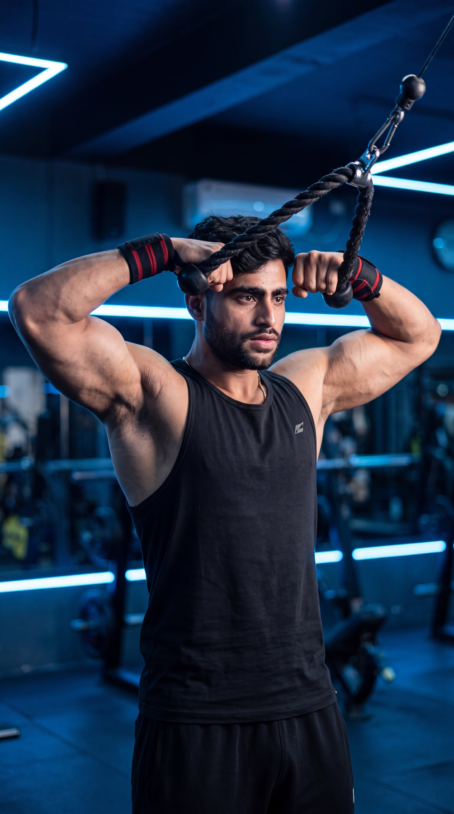

Primary Muscle
Rear Deltoids
Build Strong Rear Delts, Improve Posture & Strengthen Shoulder Stability
The Face Pull is an isolation shoulder exercise performed using a cable machine and rope attachment. It primarily targets the rear deltoids while also engaging the rhomboids, middle and lower trapezius, rotator cuff muscles, and external shoulder stabilizers. This exercise helps improve posture, strengthen the upper back, enhance shoulder health, and develop balanced, well-rounded shoulders.

Rear Deltoids
Cable Machine
Beginner
Isolation
Discover which muscles are primarily responsible for the Face Pull and which supporting muscles improve shoulder stability, posture, upper back strength, and healthy shoulder movement during every repetition.
Posterior Shoulders
Upper Back
Upper Back
Shoulder Stabilizers
Discover how the Face Pull strengthens the rear shoulders, improves posture, enhances shoulder stability, and builds a stronger upper back while promoting healthier shoulder movement.
Directly targets the posterior deltoids to improve shoulder strength, thickness, and balanced upper-body development.
Strengthens the upper back and rear shoulder muscles, helping counter rounded shoulders and encouraging a healthier, more upright posture.
Activates the rotator cuff and scapular stabilizers to improve shoulder control, stability, and overall joint function.
Reinforces proper scapular movement and external shoulder rotation, helping reduce muscular imbalances and supporting long-term shoulder health.
The controlled cable movement makes it easier to feel the rear deltoids and upper back working, resulting in more effective shoulder training.
Regular Face Pulls strengthen the muscles often neglected during pressing exercises, improving shoulder symmetry, athletic performance, and reducing the risk of shoulder injuries.
Follow these step-by-step instructions to perform the Face Pull with proper posture, controlled movement, and correct shoulder mechanics to maximize rear deltoid activation, improve posture, and strengthen the upper back and rotator cuff muscles.
Attach a rope handle to the upper pulley of a cable machine. Stand facing the machine and grasp each end of the rope with a neutral grip. Step back until the cable is under tension with your arms fully extended.
Set the pulley at approximately face height to create the ideal pulling angle.
Stand tall with your feet shoulder-width apart, tighten your core, lift your chest, and maintain a neutral spine throughout the movement. Keep your shoulders relaxed and away from your ears.
Avoid leaning backward to move heavier weight. Your torso should remain stable during every repetition.
Pull the rope toward your face while leading with your elbows. As the rope approaches your face, separate the rope ends by externally rotating your shoulders until your hands reach the sides of your head.
Think about pulling your elbows backward instead of pulling only with your hands.
Pause briefly when the rope reaches your face while squeezing your rear deltoids and shoulder blades together. Keep your wrists neutral and avoid shrugging your shoulders.
Hold the contraction for one second to maximize rear delt and upper back activation.
Slowly extend your arms back to the starting position while maintaining control and constant cable tension. Avoid allowing the weight stack to slam before beginning the next repetition.
Control the lowering phase just as carefully as the pulling phase to build stronger shoulders and healthier joints.
Avoid these common technique mistakes to maximize rear deltoid activation, improve shoulder stability, and perform the Face Pull safely and effectively.
Pulling the rope toward your chest or neck instead of your face reduces rear deltoid and rotator cuff activation while changing the mechanics of the exercise.
Pull the rope directly toward your face while allowing your hands to finish on either side of your head.
Simply pulling the rope without separating the rope ends limits rear deltoid and rotator cuff engagement, reducing the effectiveness of the exercise.
As you pull, separate the rope ends and rotate your shoulders outward to fully activate the rear deltoids and rotator cuff muscles.
Leaning backward or swinging your torso shifts the workload away from the target muscles and reduces exercise effectiveness.
Brace your core, keep your torso stable, and use a lighter weight that allows complete control throughout every repetition.
Lifting your shoulders toward your ears causes the upper trapezius to dominate the movement, reducing emphasis on the rear deltoids and scapular stabilizers.
Keep your shoulders down and relaxed, focusing on pulling with your elbows while squeezing your rear deltoids and upper back muscles.
Apply these practical coaching cues to improve your Face Pull technique, maximize rear deltoid activation, strengthen your upper back and rotator cuff, and perform every repetition with excellent control and precision.
Start every repetition by driving your elbows backward instead of pulling only with your hands. This keeps the emphasis on the rear deltoids and upper back.
Think about pulling your elbows apart while the rope naturally follows your movement.
As the rope reaches your face, separate the rope ends by rotating your shoulders outward. This increases rear deltoid and rotator cuff activation.
Your hands should finish beside your ears, not directly in front of your face.
Avoid shrugging your shoulders during the pull. Keeping them relaxed allows the rear deltoids and scapular stabilizers to perform the majority of the work.
Keep your shoulders away from your ears throughout the entire repetition.
The Face Pull is a technique-focused exercise. Using moderate resistance with perfect form is far more effective than pulling heavy weight with momentum.
Focus on quality contractions and smooth, controlled repetitions before increasing the cable resistance.
Progress from learning proper Face Pull mechanics to building stronger rear deltoids, improving shoulder stability, enhancing posture, and advancing to more challenging rear shoulder and upper back exercises.
Begin with a light cable resistance to learn the correct rope path, elbow position, external shoulder rotation, and stable body posture before increasing the load.
Proper cable setup, strict form, controlled movement, and smooth external shoulder rotation throughout every repetition.
Perform controlled repetitions while keeping your elbows high, shoulders relaxed, and the rope moving toward your face with proper external rotation.
Rear deltoid activation, rotator cuff strength, scapular control, and improved mind-muscle connection.
Gradually increase the cable resistance while maintaining perfect technique, full shoulder rotation, and complete control during both the pulling and lowering phases.
Progressive overload, shoulder stability, controlled tempo, and balanced rear shoulder development.
After mastering the Face Pull, progress to advanced exercises such as Single-Arm Face Pulls, Reverse Pec Deck Flyes, Bent-Over Rear Delt Raises, or Cable Rear Delt Flyes to further improve shoulder stability, posture, and upper back development.
Advanced rear deltoid strength, rotator cuff development, shoulder health, muscular balance, and long-term upper-body performance.
Find clear answers to common questions about the Face Pull, including proper technique, muscles worked, cable setup, training frequency, and progression for stronger, healthier shoulders.
The Face Pull primarily targets the rear deltoids while also engaging the rhomboids, middle and lower trapezius, and rotator cuff muscles. Together, these muscles improve shoulder stability, posture, and upper back strength.
The Face Pull strengthens the rear deltoids, rotator cuff, and upper back muscles that are often neglected during pressing exercises. This helps improve posture, shoulder stability, and overall shoulder function.
Pull the rope toward your face while separating the rope ends so your hands finish beside your ears. This position maximizes rear deltoid and rotator cuff activation.
Yes. Beginners should start with light cable resistance, focus on proper technique, maintain good posture, and perform slow, controlled repetitions before increasing the weight.
Most people benefit from performing the Face Pull one to three times per week as part of a balanced shoulder, upper-body, or pull-day workout while allowing adequate recovery between sessions.
For most training goals, performing 2–4 working sets of 10–15 controlled repetitions is highly effective. Focus on perfect technique, full shoulder rotation, and squeezing the rear deltoids and upper back during every repetition.
Explore other shoulder exercises that complement the Face Pull and help you strengthen the rear deltoids, improve shoulder stability, enhance posture, and build healthier, well-balanced shoulders.


Continue building stronger, more balanced shoulders with step-by-step exercise guides covering proper technique, muscles worked, common mistakes, expert coaching tips, and progressive training strategies.